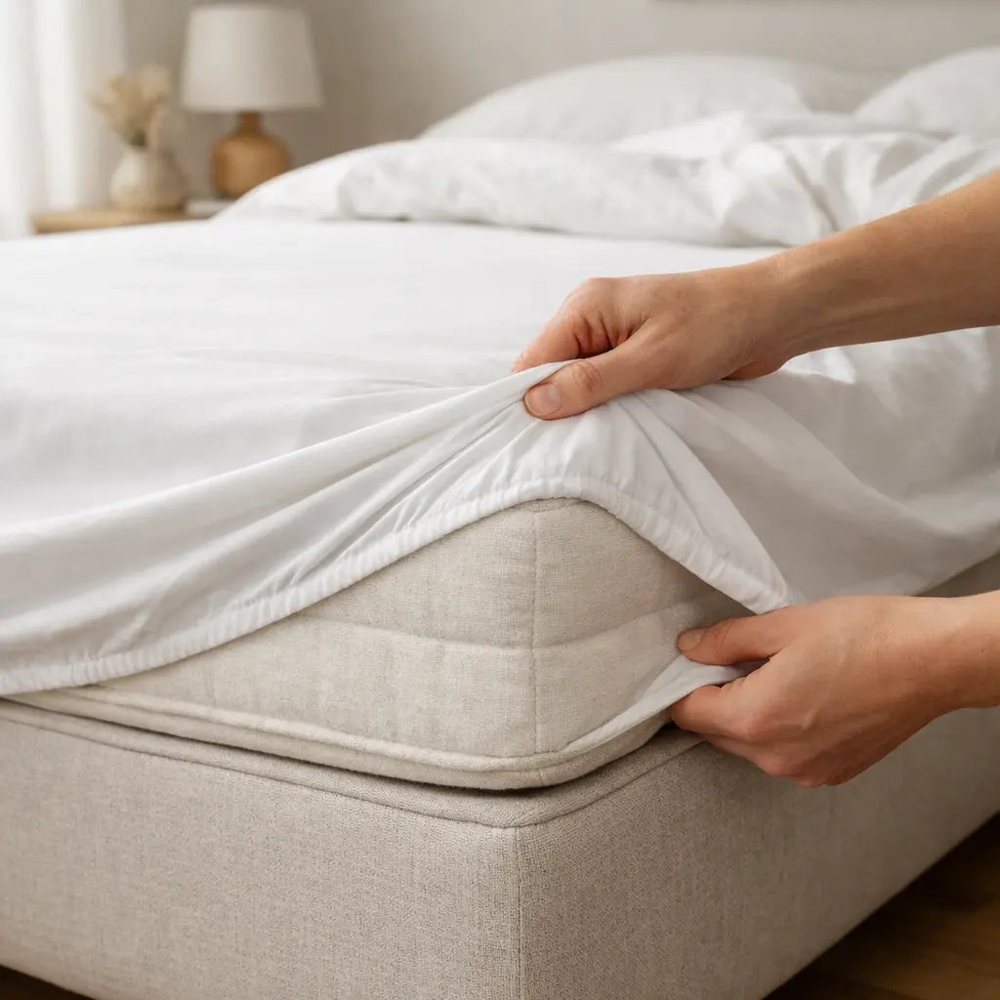
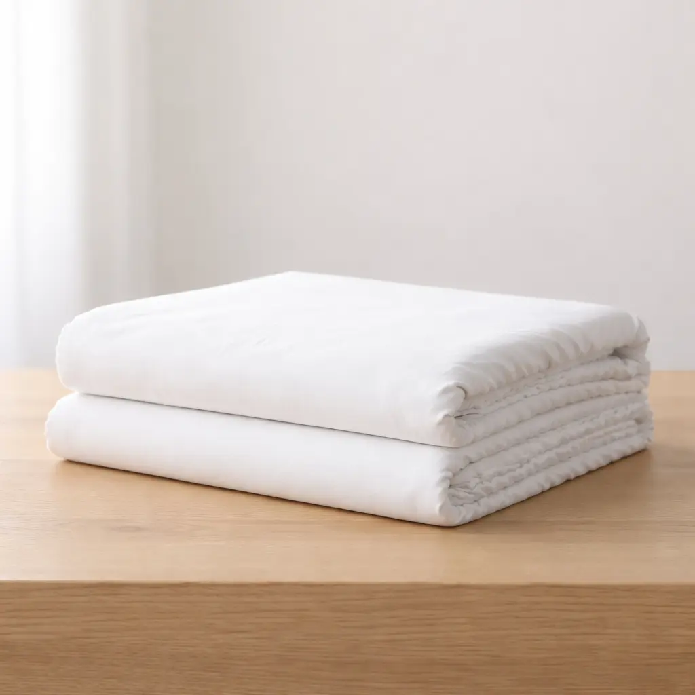

Deep-Fit-Konstruktion für europäische Matratzen.
Ein Spannbettlaken, das auf europäischen Betten wirklich sitzt.
300TC Baumwollperkal. 35 cm Deep-Fit-Konstruktion. Umlaufend verstärkter Gummizug.



Technische Spezifikationen
- Maße: 160 × 200 × 35 cm
- Taschentiefe: 35 cm, ausgelegt für Matratze-Topper-Kombinationen
- Bindung: Echte 1-über-1-Perkalbindung
- Garn: 60s kompakt gekämmte Baumwolle
- Gummizug: ½ Zoll, gewebt, umlaufend
- Ausrüstung: Vorgewaschen gegen Einlaufen
- Verarbeitung: Verstärkte Ecknähte
- Herkunft: Hergestellt in Indien
Warum 35 cm entscheidend sind
Viele EU-Matratzen liegen bei 24 bis 30 cm Höhe. Mit Topper erreicht der Aufbau häufig 30 bis 35 cm.
Standardlaken mit 25 cm Taschentiefe sind dafür oft zu knapp ausgelegt. Die Ecken verlieren bei Bewegung und nach mehreren Wäschen schneller den Halt.
ZELYN ist auf reale Matratzenhöhen abgestimmt. Tiefenzugabe und umlaufende Spannung sorgen für verlässlichen Sitz im Alltag.
Die Qualität von Perkal
Perkal basiert auf einer ausgewogenen 1/1-Bindung. Sie ermöglicht gleichmäßige Luftzirkulation und unterstützt den Temperaturausgleich.
Die Oberfläche ist matt statt glänzend und fühlt sich klar, trocken und präzise an.
Im Vergleich zu aufgerauter Baumwolle zeigt Perkal ein geringeres Pillingrisiko und bleibt in der Fläche dauerhaft strukturstabil.
Pflege & Langlebigkeit
- Maschinenwäsche bei 40°C
- Schonend im Trockner trocknen
- Nicht bleichen
- Vorgewaschen für geringe Maßveränderung
- Auf wiederholte Wäschezyklen ausgelegte Elastizität

Spannbettlaken — EU Queen
160 × 200 × 35 cm
€34.99
- 300TC in echter Perkalbindung
- 35 cm Deep-Fit-Tasche
- 60s kompakt gekämmtes Baumwollgarn
- ½ Zoll gewebter, umlaufender Gummizug
- Vorgewaschen mit verstärkten Ecknähten
- Hergestellt in Indien
Häufige Fragen
Ja. Eine 30-cm-Matratze liegt im vorgesehenen Passformbereich und erhält sicheren Eckhalt.
Ja. Die 35-cm-Tasche ist für Matratze-Topper-Kombinationen bis zur angegebenen Gesamthöhe ausgelegt.
Perkal wirkt anfangs klar und griffig mit matter Oberfläche. Mit der Zeit wird es weicher und bleibt strukturiert.
Der Stoff ist vorgewaschen, um Maßveränderungen zu begrenzen und die Passform dauerhaft zu sichern.
Ja. Ein ½-Zoll-Gewebegummizug verläuft über den gesamten Umfang, nicht nur an den Ecken.
Ja. Die ausgewogene Perkalbindung ist atmungsaktiv und unterstützt die Wärmeabgabe.
Bei 40°C waschen, schonend trocknen und auf Bleichmittel verzichten, um Stoff und Elastizität zu erhalten.
Hergestellt in Indien.
Dieses Produkt entspricht EU Queen: 160 × 200 × 35 cm.